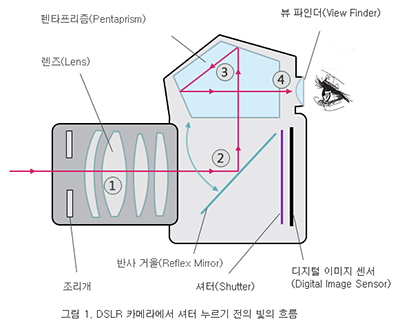

카메라 동작 원리
DSLR 카메라에서 DSLR은 “Digital Single Reflex”의 약어로써 우리말로는 디지털 일안 반사식 카메라을 의미합니다. DSLR은 디지털 카메라로써 카메라 내부에 들어온 빛이 상단의 펜타프리즘을 통하여 뷰파인더에 맺히게 되어 셔터를 누르기 전에 뷰 파인더를 통하여 피사체를 확인할 수 있게 됩니다.
[그림 1]은 DSLR 카메라에서 셔터를 누르기 전의 상태를 보여주는데 렌즈를 통해 들어오는 빛은 카메라 내부에서 다음과 같은 과정을 거치게 됩니다.
- ① 빛이 카메라 렌즈를 통과합니다.
- ② 빛이 반사 거울에 반사되어 위쪽으로 향합니다.
- ③ 빛이 펜타프리즘 거울에 반사되어 뷰파인더로 향합니다.
- ④ 들어온 빛에 의해 뷰파인터들 통하여 피사체를 볼 수 있습니다.